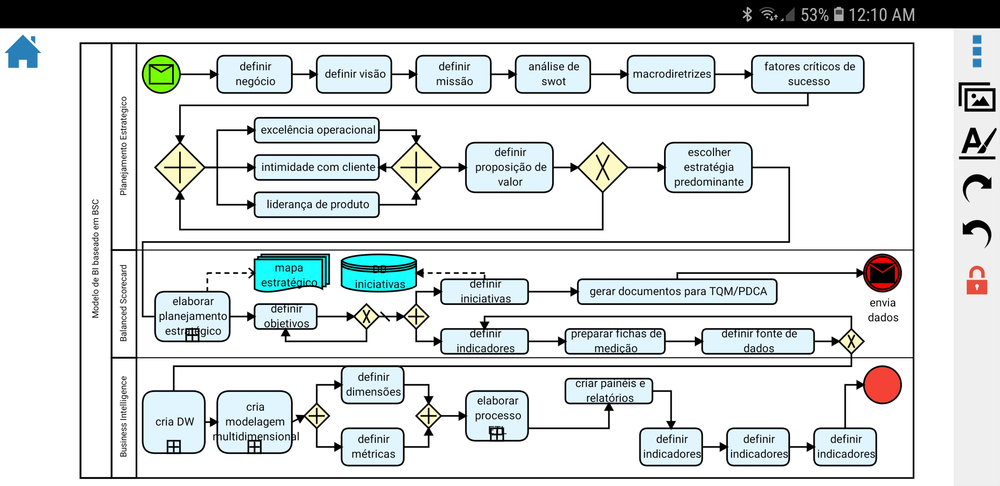
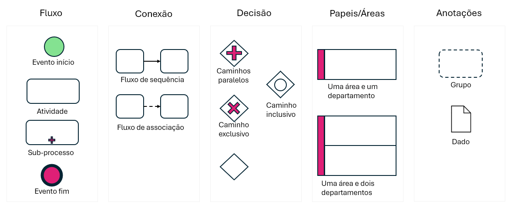
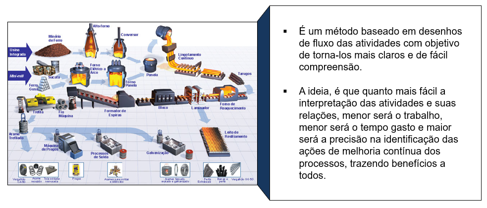
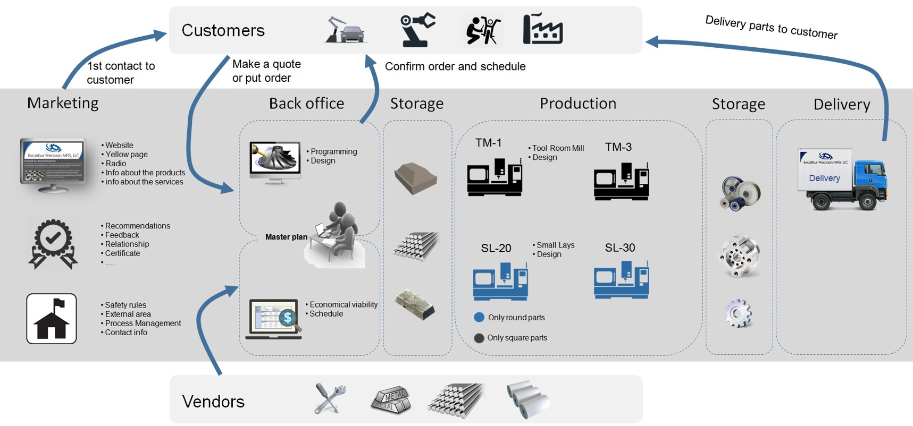
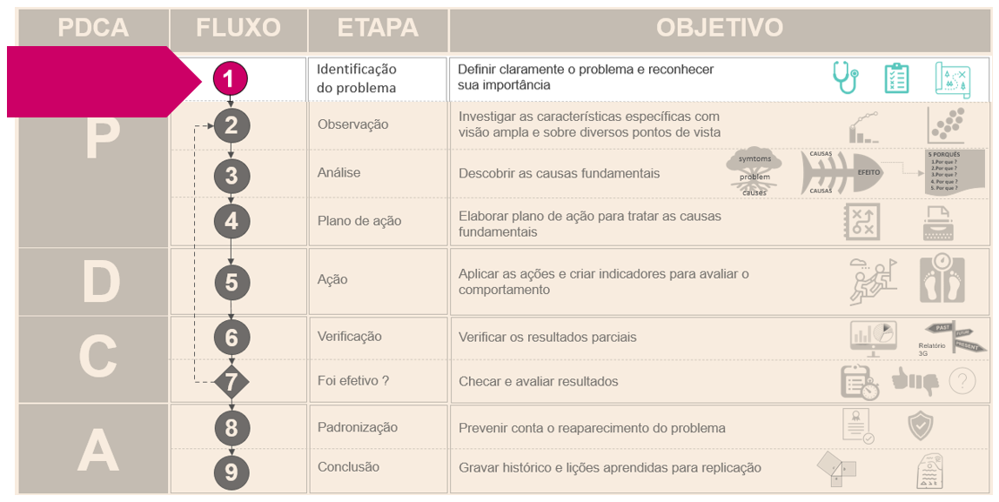

Representação gráfica de uma ideia ou processo usando textos, ilustrações, ideogramas ou figuras geométricas. A ideia central é fornecer uma visão clara do todo, o fluxo dos elementos no desenho e a direção que eles percorrem. Isso permite a formulação de hipóteses, discussões, geração de ideias, previsões acerca de movimentos futuros e possíveis melhorias no caminho.
Não há uma data precisa do início do uso dessa ideia, mas a evidência mais antiga até então foi observada no Egito antigo e o exemplo abaixo se refere ao papiro de Ani encontrado em Luxor em 1888 e datado de 1250 AC. O mesmo encontra-se hoje no museu Britânico.
O uso de descrições detalhadas das etapas em um processo nos permite compreende-lo melhor, reproduzi-lo e melhora-lo. Por outro lado, a ilustração dessas atividades, cria um efeito didático importante da etapa de compreensão Anjos (2018)
Figura 2 - Papiro de Ani: A pesagem do coração
Exemplo de fluxograma de processos usando o padrão de notação BMPN
Para modelar processos de negócios de forma visual é utilizado uma linguagem padronizada conhecida também como notação BMPN(Business Process Model and Notation). A ideia é ter uma linguagem comum permitindo que profissionais de diferentes áreas como IT, gestão e operações compreendam e colaborem com a melhoria dos processos. Ela é usada para mapear processos atuais chamados as-is, mapear processo futuros chamados to-be, identificar gargalos e oportunidades de automação ou melhorias, ao mesmo tempo facilitar a comunicação entre as áreas técnicas e de negócios.

Exemplo de fluxo de processos
Clique para expandir para ver as principais notações BPMN

Exemplos de notações BPMN
Qual o objetivo
Entender as etapas de um processo e identificar oportunidades de melhoria.
Facilitar a comunicação através da visualização do todo e suas relações
Facilitar a expressão de ideias, formulação de hipóteses e discussões.
Analisar fenômenos em diferentes perspectivas.

Figura 3 - fluxograma de processo industrial de metais
Exemplo de fluxo utilizado em comunicação e valuation.

Fluxo de processo - Excallibur Mfg - Greer SC
De onde vem
O fluxograma ou desenho de um processo vem da necessidade ter uma visão geral daquilo que está sendo analisado, estudado ou discutido para compreender melhor as relações e interações entre os elementos. Com isso, permitir que ideias, melhorias possam ser geradas ou até estratégias ou planos táticos possam ser propostos.

Figura - Etapa 1 do PDCA: Definir claramente o problema e reconhecer sua importância
Como fazer
Existem várias formas de criar um fluxograma de processos sendo o lápis e o papel um deles. Por outro lado, no R também é possível criar vários modelos de fluxogramas os quais citarei alguns usando o pacote DiagrammeR onde:
mermaid é a função que chamará a biblioteca em javascript que fará o diagrama
graph LR é a orientação do digrama que pode ser TD=top down, LR = left to right etc.
A, B, C, D..N é a definição de um nó
>], [], (), (()) é o formato do nó
–> é a direção do conector
Exemplo do modelo Flowcharts - Corretora de ações na bolsa de valores
Code
graph LR subgraph Cliente A[Vendido no limite] end subgraph Corretora B{Tem saldo?} C[Manter posição] D[Novo pregão] end subgraph Compliance E[Encerra posição] end A --> B B -- Sim --> C C --> D D --> B B -- Não --> E
graph LR
subgraph Cliente
A[Vendido no limite]
end
subgraph Corretora
B{Tem saldo?}
C[Manter posição]
D[Novo pregão]
end
subgraph Compliance
E[Encerra posição]
end
A --> B
B -- Sim --> C
C --> D
D --> B
B -- Não --> E
Exemplo do modelo MindMap - Componentes de princípios Lean
Code
mindmap root((Lean Principles)) Waste Overproduction Waiting Conveyance Processing Inventory Motion Correction Just-in-time Takt time Continuous flow Pull System Jidoka Stop and notify for abnormalities Separete human and machine work Kaizen Value-stream mapping Continuous improving Five S Sourt Out Set in Order Shine Spic-and-span Sustain
mindmap
root((Lean Principles))
Waste
Overproduction
Waiting
Conveyance
Processing
Inventory
Motion
Correction
Just-in-time
Takt time
Continuous flow
Pull System
Jidoka
Stop and notify for abnormalities
Separete human and machine work
Kaizen
Value-stream mapping
Continuous improving
Five S
Sourt Out
Set in Order
Shine
Spic-and-span
Sustain
Exemplo do modelo Diagrama de Sequência - Fábrica de peças
Code
sequenceDiagram actor Pacemaker participant Corte participant Pintura participant Montagem participant Expedicao Note over Pacemaker,Expedicao: Sistema Puxado com Lean Principles Pacemaker->>+Montagem: Sinal de Puxada (Peça B) Note right of Montagem: Gatilho para iniciar trabalho Montagem->>Pintura: Sinal de Puxada (Peça B) Pintura->>Corte: Sinal de Puxada (Peça B) Corte->>Pintura: Peça B concluída Note left of Corte: Trabalho realizado sob demanda Pintura->>Montagem: Peça B pintada Montagem->>Pacemaker: Peça B montada Pacemaker->>Expedicao: Peça B pronta para envio Note over Pacemaker: Garante fluxo contínuo e sincronizado Pacemaker->>+Montagem: Sinal de Puxada (Peça A) Montagem->>Pintura: Sinal de Puxada (Peça A) Pintura->>Corte: Sinal de Puxada (Peça A) Corte->>Pintura: Peça A concluída Pintura->>Montagem: Peça A pintada Montagem->>Pacemaker: Peça A montada Pacemaker->>Expedicao: Peça A pronta para envio Note over Expedicao: Entrega Just-in-Time ao cliente
sequenceDiagram
actor Pacemaker
participant Corte
participant Pintura
participant Montagem
participant Expedicao
Note over Pacemaker,Expedicao: Sistema Puxado com Lean Principles
Pacemaker->>+Montagem: Sinal de Puxada (Peça B)
Note right of Montagem: Gatilho para iniciar trabalho
Montagem->>Pintura: Sinal de Puxada (Peça B)
Pintura->>Corte: Sinal de Puxada (Peça B)
Corte->>Pintura: Peça B concluída
Note left of Corte: Trabalho realizado sob demanda
Pintura->>Montagem: Peça B pintada
Montagem->>Pacemaker: Peça B montada
Pacemaker->>Expedicao: Peça B pronta para envio
Note over Pacemaker: Garante fluxo contínuo e sincronizado
Pacemaker->>+Montagem: Sinal de Puxada (Peça A)
Montagem->>Pintura: Sinal de Puxada (Peça A)
Pintura->>Corte: Sinal de Puxada (Peça A)
Corte->>Pintura: Peça A concluída
Pintura->>Montagem: Peça A pintada
Montagem->>Pacemaker: Peça A montada
Pacemaker->>Expedicao: Peça A pronta para envio
Note over Expedicao: Entrega Just-in-Time ao cliente
Pra onde vai
O fluxograma pode ser utilizado em vários estudos, como mapeamento de processos de produção, percurso de uma fatura, fases de uma operação de venda, fluxo de matérias, formulação de estratégias entre outras aplicações.
Uma das aplicações do fluxograma de processos é na etapa 1 do PDCA que trata da definição e reconhecimento do problema. Após o desenho do processo e reconhecimento do problema a próxima etapa é a análise do fenômeno sob diversos pontos de vista.
Qual o resultado
Eficiência no aproveitamento de recurso de tempo e mão de obra através da facilidade de compreenção e geração de ideias contribuindo com mais clareza e velocidade.
Maior engajamento da equipe uma vez que todos compreendem o processo de forma mais clara e precisa mesmo em situações em que foge da área de domínio.
Maior rapidez na identificação de problemas e identificação de pontos de melhoria pois ilustrações e figuras são melhores armazenadas na memória humana.